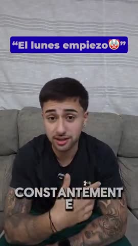

Tu plan. Cada línea del corte está a la derecha. La casilla de la izquierda es tuya: escribe qué se ve en pantalla. 42.1 s · 25 líneas.
Si dicho el lunes empiezo más de tres veces,
escucha esto, no te falta disciplina.
Lo que te pasa tiene nombre es bucle te
lo a decir en seis pasos.
Uno, ves una foto,
te miras al espejo y dices,
esta vez va serio.
Dos, haces el plan perfecto,
vas seis días a gimnasio,
cumples a rajatabla cero caprichos.
Tres, llega la vida real.
Una cena, una mala semana
mal día.
Cuatro, ya la he liado.
Cinco, lo pierdes, empiezas a comer y lo recuperas
todo.
seis, pasan tres semanas,
Y vuelta empezar, así,

constantemente.
dónde está el fallo?
Todo el mundo dice que en el número 5,
pero la verdad es que en
los planes perfectos no existen.
Si quieres salir del bucle de una vez por
todas, comenta la palabra bucle.